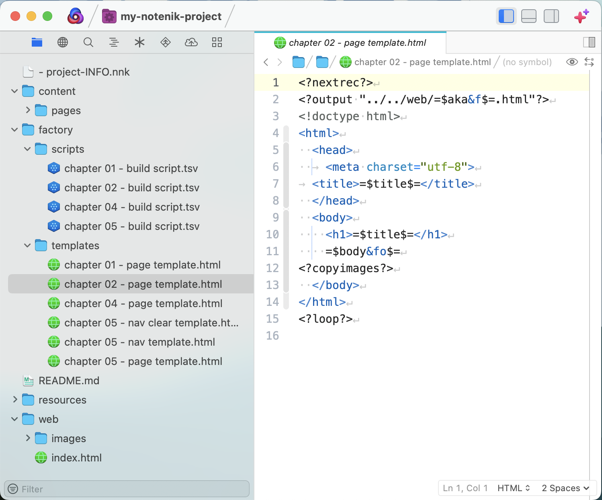

Intro to Website Creation using Notenik ↑
3. Intermission: upgrade your text editor
Start by reading the corresponding HTML for people chapter.
There are many good text editors for the Mac.
I tend to use BBEdit and/or Nova.
BBEdit allows you to create a project file that you can use to view one or more folders in your sidebar. When found in a Notenik project folder, Notenik allows you to open a BBEdit project right from within Notenik.
If you’re using Nova, then modify the Notenik General Settings to turn On the option to Gen Open in Nova Items, which will cause Notenik to generate an item titled “Open in Nova” for every project folder.
This is what an early version of our demo project looks like when opened within Nova.

Both BBEdit and Nova help with HTML formatting and viewing.
VSCode is also available for the Mac, and is used by many.
CotEditor is another option. It’s free and open-source and made exclusively for the Mac.
Next: 4. A website with style